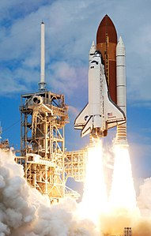

La corsa allo spazio (talvolta detta anche prima era spaziale) è allo stesso tempo un capitolo dell'esplorazione spaziale del Novecento e uno degli aspetti che assunse la guerra fredda tra Stati Uniti e Unione Sovietica. Le due superpotenze si sfidarono nella rincorsa a sempre maggiori successi spaziali nel lancio di missili, satelliti, nella conquista della Luna e di pianeti del sistema solare, nel periodo compreso all'incirca tra il 1957 e il 1975, cercando di prevalere l'uno sull'altro. Per quanto le radici affondino nelle prime tecnologie missilistiche e nelle tensioni internazionali che seguirono la seconda guerra mondiale, la corsa allo spazio iniziò dopo il lancio del satellite sovietico Sputnik 1 il 4 ottobre 1957. Il termine è analogo alla corsa agli armamenti. Essa divenne una parte importante della rivalità culturale, tecnologica e ideologica tra Stati Uniti e Unione Sovietica durante la guerra fredda. La tecnologia spaziale divenne un'importante arena per questo conflitto a distanza, sia per le potenziali applicazioni militari sia per i benefici derivanti dalla propaganda ideologica.
Lo sbarco sulla Luna, il 20 luglio 1969, fu il coronamento della vita di Neil Armstrong. Ma fu anche e soprattutto un evento epocale nella storia dell'umanità, destinato a segnare l'apice della corsa allo spazio fra Stati Uniti e Unione Sovietica. Per quasi 20 anni le imprese spaziali furono un nuovo teatro della Guerra Fredda, una gara tecnologica senza risparmio di colpi cominciata ufficialmente il 4 ottobre 1957 con il primo satellite artificiale, lo Sputnik 1. Il suo segnale, dallo spazio, segnò il primo punto a favore dell'Urss. Quel 'bip' emesso dal satellite per 20 giorni consecutivi prese alla sprovvista gli Stati Uniti. Per l'Urss fu un orgoglio nazionale e per il mondo segnò l'inizio dell'era spaziale. Neppure un mese più tardi, il 3 novembre 1957, l'Urss lanciò lo Sputnik 2: fu un altro primato perchè a bordo c'era un essere vivente, la cagnetta Laika. E poichè Laika sopravvisse all'ingresso in orbita ma poi morì per lo stress e il surriscaldamento, nel 1960 l'esperimento si ripetè, stavolta con successo, con i cani Belka e Strelka.
Lo Space Transportation System (STS), comunemente noto come Space Shuttle o Shuttle, è stato un sistema di lancio spaziale riutilizzabile della NASA, l'ente governativo statunitense responsabile dei programmi spaziali, adibito a missioni spaziali in orbita intorno alla Terra. Lanciato in orbita per la prima volta il 12 aprile 1981, ha portato a termine la sua ultima missione il 21 luglio 2011. Dopo che l'orbiter ha passato una revisione in uno dei tre edifici dedicati alla sua manutenzione (Orbiter Processing Facility, o OPF), situati al Kennedy Space Center in Florida, riceve una parte del carico utile della missione successiva e vengono caricati i materiali di consumo.  L'orbiter viene poi pesato al fine di determinare con precisione il suo centro di gravità, dato fondamentale per la corretta gestione dei parametri di volo da parte dei computer di bordo. Quindi la navetta viene trasferita al Vehicle Assembly Building (VAB), l'enorme edificio di assemblaggio costruito per i razzi Saturn V durante il programma Apollo. Qui viene messo in posizione verticale e vengono installati i due booster laterali e il serbatoio esterno. Per eseguire tali procedure, si utilizzano due carroponte di 200 tonnellate in grado di alzare la navetta a circa 100 metri. L'intero complesso viene posizionato sulla Mobile Launcher Platform che verrà utilizzata per spostarlo verso il luogo di lancio e come base per il decollo. Vengono poi testati i collegamenti meccanici ed elettrici tra i tre componenti e gli impianti di terra. Tutte queste verifiche richiedono, teoricamente, almeno sei giorni. Tutte le missioni Shuttle sono lanciate dal Kennedy Space Center (KSC). Lo Shuttle Launch Weather Officer, il responsabile al monitoraggio delle condizioni meteorologiche, controlla la situazione per determinare se il lancio è possibile. In particolare, le condizioni devono essere accettabili anche in almeno un sito per l'atterraggio di emergenza, che viene chiamato Transatlantic Abort Landing site. Nelle ultime decine di secondi di spinta dei propulsori, la massa del velivolo è sufficientemente bassa da richiedere la diminuzione della potenza di questi ultimi per limitare l'accelerazione a 3 g, per evitare un eccessivo stress fisico all'equipaggio. I tre propulsori vengono spenti prima dell'esaurimento completo del carburante, poiché se fossero attivi in assenza di carburante si danneggerebbero gravemente. La quantità di ossigeno si esaurisce prima dell'idrogeno, poiché l'ossigeno liquido tende a reagire violentemente. Il serbatoio esterno viene sganciato attraverso cariche esplosive. Esso precipita nell'atmosfera disintegrandosi prima di toccare la superficie terrestre, generalmente sopra l'Oceano Indiano. La distruzione è agevolata dalla presenza di idrogeno al suo interno, che lo fa letteralmente esplodere, in modo da limitare la grandezza dei frammenti in caduta. L'orbiter attiva i propulsori Orbital maneuvering system (OMS) per allontanarsi dal serbatoio. Nelle missioni verso la stazione spaziale i propulsori di manovra vengono attivati quando i propulsori principali sono ancora in funzione. In questo modo l'orbiter è in un percorso che, nel caso di malfunzionamento dei propulsori, lo riporterebbe in un sentiero di discesa verso la terra. molte modifiche vennero apportate alle specifiche della navetta, principalmente per ridurre i costi di sviluppo. L'ala a doppia delta fu introdotta in questa fase allo scopo di migliorare la capacità di volo a bassa velocità ed in più permetteva, con interventi limitati nel design della parte anteriore, di compensare i problemi di posizione del centro di gravità che avrebbero potuto verificarsi in una fase più avanzata di sviluppo. Una delle novità più importanti fu l'abbandono di motori a reazione da utilizzarsi nelle fasi di atterraggio. Per spostare la navetta, ora non motorizzata, tra i vari siti, la NASA acquistò nel 1974 un Boeing 747 usato, che venne attrezzato per il suo trasporto sul dorso della fusoliera (l'aereo fu chiamato Shuttle Carrier Aircraft). Il primo test del motore SSME dell'orbiter si svolse il 17 ottobre 1975. Il serbatoio esterno fu progressivamente ridotto per consentire un risparmio di peso di 4,5 tonnellate. La costruzione della prima navetta Enterprise terminò nel marzo 1976 ma essa non venne poi utilizzata nella fase operativa, in quanto troppo pesante. Il 12 agosto 1977 si tenne il primo volo senza motore della navetta, portato in quota e poi sganciata dal 747, nell'ambito del programma Approach and Landing Tests. La consegna dei primi SSME operativi fu rinviata di due anni a causa di alcuni inconvenienti nella fase di test che comportarono una rivisitazione del progetto. Nel febbraio 1980 fu completata la settima e ultima prova di qualificazione del booster. Il primo volo spaziale dello Space Shuttle avvenne il 12 aprile 1981 con la missione STS-1. Lo Space Shuttle Columbia, con al comando l'esperto astronauta John W. Young e con Robert Crippen come pilota, realizzò 17 orbite in poco più di due giorni, rientrando in sicurezza presso la Edwards Air Force Base. Prima dell'impiego operativo furono compiute altre tre missioni (STS-2, STS-3, STS-4) per testare tutto il sistema, avvenute tra il 1981 e il 1982.
Grazie anche alla disponibilità di missili tedeschi V2, recuperati alla fine della Seconda guerra mondiale, il programma Sputnik dell'Unione Sovietica ebbe inizio nel 1948, quando si intuì la possibilità di modificare missili militari in vettori per il lancio di satelliti. L'annuncio del lancio venne dato da Radio Mosca la notte tra il 4 e il 5 ottobre 1957. Con il lancio dello Sputnik 1 l'Unione Sovietica prese in contropiede gli Stati Uniti. Lo Sputnik 1 aveva lineamenti ben più semplici di un satellite artificiale di oggi: era infatti formato solo da una sfera di alluminio di 58 cm di diametro, contenente due trasmittenti (su 20,005 MHz e 40,002 MHz, con una potenza complessiva di circa 1 Watt), una serie di batterie zinco-argento e un termometro; da questo corpo centrale si dipartivano quattro antenne lunghe circa 2,5 metri. Gli strumenti a bordo dello Sputnik 1 rimasero funzionanti per 57 giorni. Infine, esso bruciò durante il rientro in atmosfera il 4 gennaio 1958 dopo circa 1400 orbite e 70.000.000 km.
L'Unione Sovietica mostrò un atteggiamento molto ambivalente sul progetto di portare un uomo sulla Luna. Il leader Chruščёv non volle essere "sconfitto" dai rivali e neppure accettare i dispendi economici di un tale programma. Nell'ottobre 1963 egli affermò che "non si stanno pianificando dei voli di cosmonauti sulla Luna", ma non affermò neppure che si sarebbe ritirato dalla corsa allo spazio. Passò un anno prima che i sovietici iniziassero i tentativi per un atterraggio lunare. Nel dicembre del 1968, gli astronauti americani James Lovell, Frank Borman e William Anders orbitarono per la prima volta attorno alla Luna, oltre a festeggiare per la prima volta nello spazio il Natale e rientrarono in sicurezza sulla Terra. Kennedy propose dei programmi congiunti, come un atterraggio lunare di astronauti americani e cosmonauti sovietici e satelliti meteorologici migliorati, ma Chruščëv, interpretandolo come un tentativo di sottrarre all'Unione Sovietica la superiore tecnologia spaziale, rifiutò. Sergej Pavlovič Korolëv e l'Agenzia Russa dell'Aeronautica e Spaziale, iniziarono a proporre il razzo N1 assieme alla navicella spaziale Sojuz e al modulo lunare LK come veicoli in grado di portare un equipaggio sulla Luna. Chruščëv indirizzò la progettazione per raggiungere nuovi traguardi attraverso la modifica della tecnologia Vostok esistente, mentre un secondo team iniziò a progettare un nuovo vettore (il Proton) e una nuova navetta (la Zond) per un volo cislunare. Nel 1964 la nuova leadership sovietica fornì supporto a Korolëv per la destinazione lunare, ponendo tutti i progetti con equipaggio umano sotto la sua direzione. Con la morte di Korolëv e il fallimento del primo lancio della navetta Sojuz nel 1967 la coordinazione sovietica del programma lunare venne rapidamente alla luce. La prima scelta di Korolëv per la destinazione lunare era ricaduta su Vladimir Komarov, che tuttavia perse la vita nell'incidente della Sojuz 1 nel 1967. I candidati successivi furono Jurij Gagarin e Aleksej Leonov ma con la morte di Gagarin e i successivi fallimenti nei lanci del vettore N-1 del 1969, i progetti di un atterraggio umano furono prima rinviati e in seguito cancellati. Terra che sorge, 24 dicembre 1968 (NASA) Mentre le sonde senza equipaggio sovietiche Zond 5 e Zond 6 furono le prime a raggiungere il satellite e a tornare sulla Terra, l'astronauta americano Neil Armstrong fu la prima persona a mettere piede sulla Luna il 20 luglio 1969. Comandante della missione Apollo 11, Armstrong ricevette il supporto del pilota del modulo di comando Michael Collins e del pilota del modulo lunare Buzz Aldrin in un evento seguito da più di 500 milioni di persone in tutto il mondo. L'atterraggio sulla Luna venne interpretato come uno dei momenti più significativi del ventesimo secolo e le parole di Armstrong sono state memorabili:
(EN) « One small step for man, a giant leap for mankind »
(IT) « Un piccolo passo per un uomo, un balzo da gigante per l'umanità »
(Neil Armstrong)
© Copyright "Astronomy", 2018